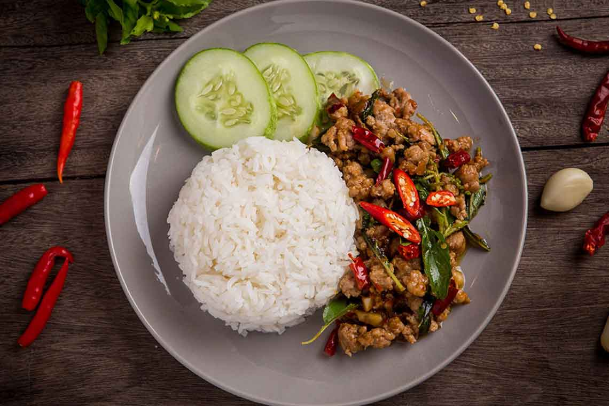

Ka Phrao

What is Ka Phrao
By some accounts, phat kaphrao was included as part of Prime Minister Field Marshal Plaek Phibunsongkhram's Thai cultural mandates during WWII. Phat kaphrao, as well as pad thai, were one of the promoted dishes in local Thai food contests.
Phat kaphrao consists of meat such as pork, chicken, beef, and seafood stir fried with Thai holy basil and garlic. It is served with rice and topped up (optional) with fried eggs. The main seasonings are soy sauce, Thai fish sauce, oyster sauce (optional), cane sugar, and bird's eye chili.
Over time, phat kaphrao has evolved with the addition of other ingredients such as Chinese century eggs and Thai local vegetables, namely asparagus beans, baby corns, onions, carrots, cowpeas, banana peppers, mushrooms, Chinese kales, bamboo shoots and coconut shoots. However, adding vegetables in phat kaphrao is also seen as an effort to reduce the cost of meat and increase profit margins on the part of food vendors.
Ingredients
- Chicken
- Thai Cillies
- Garlic
- Oyster Sauce
- Soy Sauce
- Fish Sauce
- Black Soy Sauce
- Sugar
- Thai Holy Basil Leaves
- Vegetable Oil
- Eggs
- White Rice
How to make Ka Phrao
- Pound Thai chilies into a fine paste.
- Add garlic and spur chilies and pound into a rough paste.
- Combine oyster sauce, soy sauce, fish sauce, black soy sauce, water and sugar; stir to dissolve the sugar.
- In a wok or a large saute pan, saute the garlic-chili paste in a little vegetable oil over medium high heat until the garlic starts to turn golden.
- Add chicken and toss until they're no longer in big clumps. Add the sauce and continue tossing until the chicken is almost done.
- Add onions and long beans; toss until the chicken is done.
- Remove from heat and stir in the holy basil.
- Taste and adjust seasoning as needed.
- Heat about 1 cm of vegetable oil in a small non-stick pan or a wok over medium high heat.
- Once the oil is hot (you want the oil very hot, especially if you like runny yolk), crack the egg directly into the pan and let it fry until the edges are browned and bubbly.
- Serve the stir-fry over rice and top it with the fried egg.
Back